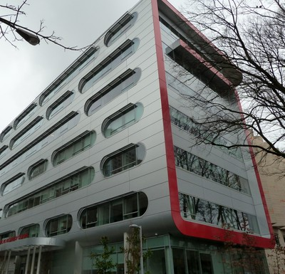
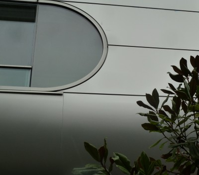

Metal [EWME]
Todos los tipos de revestimiento metálicos y materiales de paredes. Incluye planchas de aluminio, láminas de acero corrugado (CGI) o en hojas de aluminio, hojas compuestas de aluminio, láminas de cobre, malla de alambre y chapa perforada.

Un edificio con muros exteriores hechos de hojas de aluminio, Vancouver, Canada (S. Brzev)


Hojas de acero corrugado, Canada (S. Brzev)

Muro exterior hecho de hojas de metal corrugado, Kenya (K. Jaiswal)

Hojas de metal usadas como revestimiento exterior, India (S. Brzev)